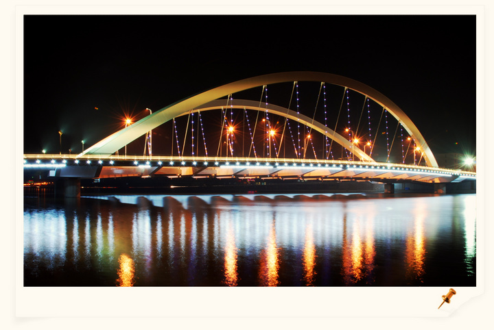
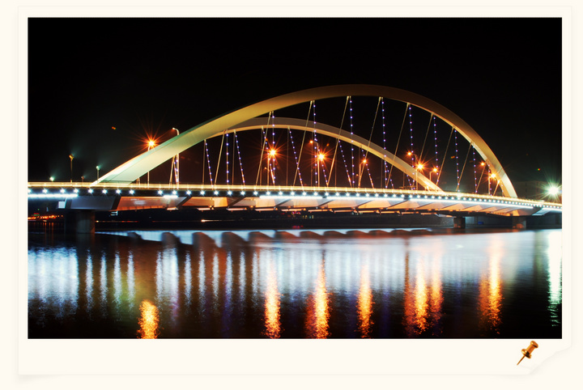

我的家乡——河北
| 目录 | 历史 | 行政区划 | 文化 | 名胜古迹 | 地理环境 |
|---|
| 历史 |
|---|
| 河北古称冀州，舜分置十二州，河北为幽州。《禹贡》亦为冀州。《周礼·职方》曰幽州。 公元前15世纪，商王祖乙迁都于邢（今邢台市）。
公元前11世纪，周武王封召公之子于燕国，封周公之子于邢国，河北成为燕、邢之地。春秋时期河北省北部属于燕国，南部属于中山国、赵国和魏国、西北部属代国。邯郸和邢台曾是赵国都城。 秦始皇时期这里属于钜鹿郡、邯郸郡、恒山郡、齐郡、济北郡、上谷郡、代郡、渔阳郡、右北平郡的地域。 西汉时河北属幽州、冀州、并州小部分。 西晋时属幽州、冀州、司州部分。东晋十六国时期先后被后赵、前燕、前秦、后秦、西燕、北燕、南燕占领。南北朝时期先后属北魏、东魏、北齐、北周。 隋代时属冀州。 唐代时属河北道、 河东道小部分。 五代后晋时，石敬瑭割燕云十六州给契丹。周世宗复三关，于是与契丹以白沟河为界。 北宋时南部属河北东路 和河北西路。 金代时属河北东路、河北西路。 蒙古初置燕京路。 明属北直隶、山西小部分、鞑靼小部分，仍属中央直辖，天津开始设县。 清代属直隶省 ，辖顺天府（大兴、宛平）、顺德府（邢台）、广平府（永年）、保定府（清苑）、 正定府（正定）、天津府（天津）、河间府（河间）、承德府（承德）、大名府（大名）、永平府（卢龙）、宣化府（宣化）等。 直隶省省会在保定 。雍正八年起，直隶总督驻 保定府（今保定市）， 现存有当时的直隶总督署。 1928年改名河北省。 中华民国成立后，当时国民政府建都南京,于1928年改为河北省今名。 1949年，中华人民共和国成立后，仍为河北省。 1952年，撤销察哈尔省，将其原察南、察北两个专区划归河北省；1956年撤销热河省，将其原大部分辖区划归河北省。 1958年，将河北省的顺义、延庆、平谷、通县、房山、密云、怀柔、大兴等县划归北京市。 文化大革命前期的1968年，河北省的省会 从 保定市 迁往石家庄。 1973年，将河北省的蓟县、宝坻、武清、静海、宁河等五县划入天津市。形成河北省的现在辖区规模。 |
| 行政区划 | |||||
|---|---|---|---|---|---|
| 行政区 | 面积(km2) | 下辖行政区 | 
|
||
| 秦皇岛市 | 7813 | 海港区、山海关区、北戴河区、抚宁区、青龙满族自治县、昌黎县、卢龙县 | |||
| 廊坊市 | 6500 | 广阳区、安次区、固安县、永清县、香河县、大城县、文安县、大厂回族自治县、霸州市、三河市 | |||
| 衡水市 | 8815 | 桃城区、枣强县、武邑县、武强县、饶阳县、安平县、故城县、阜城县、冀州市、深州市、景县 | |||
| 唐山市 | 13472 | 路北区、路南区、古冶区、开平区、丰南区、丰润区、曹妃甸区、滦县、滦南县、乐亭县、迁西县、玉田县、遵化市、迁安市 | |||
| 承德市 | 39519 | 双桥区、双滦区、鹰手营子矿区、承德县、兴隆县、滦平县、隆化县、丰宁满族自治县、宽城满族自治县、围场满族蒙古族自治县、平泉县 | |||
| 石家庄市 | 15848 |
长安区、桥西区、新华区、井陉矿区、裕华区、藁城区、鹿泉区、栾城区、井陉县、正定县、行唐县、灵寿县、高邑县、深泽县、赞皇县、无极县、平山县、 元氏县、赵县、晋州市、新乐市、辛集市 |
|||
| 邯郸市 | 12000 | 邯山区、丛台区、复兴区、峰峰矿区、邯郸县、临漳县、成安县、大名县、涉县、磁县、肥乡县、永年县、邱县、鸡泽县、广平县、馆陶县、曲周县、武安市、魏县 | |||
| 张家口市 | 36860 | 桥东区、桥西区、宣化区、下花园区、宣化县、张北县、康保县、沽源县、尚义县、蔚县、阳原县、怀安县、万全县、涿鹿县、赤城县、崇礼县、怀来县 | |||
| 保定市 | 22100 |
竞秀区、莲池区、满城区、清苑区、徐水区、涞水县、阜平县、定兴县、唐县、高阳县、容城县、涞源县、望都县、安新县、易县、曲阳县、蠡县、顺平县、 博野县、雄县、安国市、高碑店市、定州市、涿州市 |
|||
| 邢台市 | 12486 | 桥东区、桥西区、邢台县、临城县、内丘县、柏乡县、隆尧县、任县、南和县、巨鹿县、新河县、广宗县、平乡县、威县、清河县、临西县、南宫市、沙河市、宁晋县 | |||
| 沧州市 | 13419 | 运河区、新华区、沧县、青县、东光县、海兴县、盐山县、肃宁县、南皮县、吴桥县、献县、孟村回族自治县、泊头市、黄骅市、河间市、任丘市 | |||
| 文化 |
|---|
| 河北省作为华夏文明的重要发祥地，经过数千年的积淀，形成了丰富、独特的文化，成为名符其实的文化资源大省。全省现有不可移动文物34046处，拥有长城、避暑山庄及其周围庙宇、清东陵、清西陵等3项5处世界文化遗产；全国重点文物保护单位168处，居全国第三位；省级文物保护单位930处，居全国前列；国家级非物质文化遗产项目227项，居全国第二位；省级非物质文化遗产项目400项，国家级非物质文化遗产代表性传承人91人，居全国前列；省级非物质文化遗产代表性传承人260人 。 |
| 名胜古迹 |
|---|
| 河北是文物大省，省级以上文物保护单位达930处，居全国第一位。拥有长城、承德避暑山庄及周围寺庙、清东陵和清西陵3项世界文化遗产；拥有邯郸、保定、承德、正定、山海关5个国家级历史文化名城。河北是长城途经距离最长、保存最完好、建筑风格最具代表性的省份，境内长城遗存达2000多公里，老龙头、山海关、金山岭长城等长城精华均在河北境内。承德避暑山庄是世界现存最大的皇家园林，其周围的外八庙是中国最大的皇家寺庙群。清东陵和清西陵是中国现存规模最大、保存最完整的皇家陵墓群。赵州桥被誉为“世界拱桥之祖”，是世界最古老的敞肩石拱桥，迄今已有1400余年的历史。 截止到2013年河北有国家5A级景区五处：西柏坡风景区、安新白洋淀、涞水野三坡景区、山海关景区、承德避暑山庄，其他著名风景区还有衡水湖自然保护区、邢台峡谷群、崆山白云洞、涉县一二九师旧址等。 |
| 地理环境 |
|---|
|
位置 河北省环抱首都北京，地处东经113°27′～119°50′，北纬36°05′～42°40′之间。总面积18.85万平方公里，省会石家庄市。北距北京283公里，东与天津市毗连并紧傍渤海，东南部、南部衔山东、河南两省，西倚太行山与山西省为邻，西北部、北部与内蒙古自治区交界，东北部与辽宁省接壤。 地形 、东南低，由西北向东南倾斜。地貌复杂多样，高原、山地、丘陵、盆地、平原类型齐全，有坝上高原、燕山和太行山山地、河北平原三大地貌单元。坝上高原属蒙古高原一部分，地形南高北低，平均海拔 1200～1500米 ，面积15954㎞²，占河北省总面积的8.5%。燕山和太行山山地，包括中山山地区、低山山地区、丘陵地区和山间盆地4种地貌类型，海拔多在 2000米以下，高于 2000米 的孤峰类有10余座，其中小五台山高达 2882米 ，为河北省最高峰。山地面积90280㎞²，占河北省总面积的48.1%。河北平原区是华北大平原的一部分，按其成因可分为山前冲洪积平原，中部中湖积平原区和滨海平原区3种地貌类型，全区面积81459㎞²，占河北省总面积的43.4%。 气候 河北属温带大陆性季风气候。 大部分地区四季分明。年日照时数2303.1小时，年无霜期81～204天，年均降水量484.5毫米；月平均气温在3℃以下,7月平均气温18℃至27℃，四季分明。 |